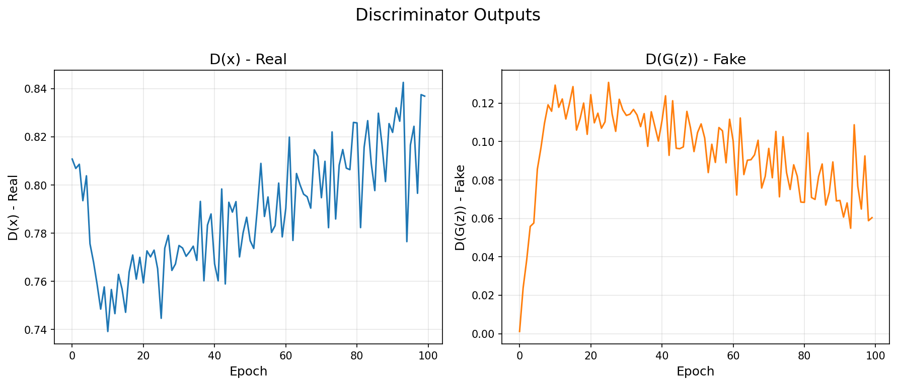

Meyve Tazeliği Veri Seti Üzerinde Görüntü Sentezi
Ders: DSM 5014 - Derin Öğrenme Yöntemleri ve Uygulamaları
Hazırlayan: Malika Annamuradova
Öğrenci No: 2024900442
Tarih: Aralık 2025
Derin öğrenme alanında üretici modeller (generative models), son yıllarda büyük ilgi görmektedir. Bu modeller, eğitim verilerinin dağılımını öğrenerek yeni, gerçekçi veriler üretebilmektedir. Görüntü sentezi, veri artırımı, anomali tespiti ve yaratıcı uygulamalar gibi birçok alanda kullanılmaktadırlar.
Bu projede, iki temel üretici model ailesi karşılaştırılmaktadır:
Bu çalışmanın temel amacı, VAE ve DCGAN modellerinin görüntü üretme yeteneklerini aynı veri seti üzerinde deneysel olarak karşılaştırmak ve her iki yaklaşımın güçlü ve zayıf yönlerini analiz etmektir. Karşılaştırma kriterleri şunlardır:
Ödev kapsamında Seçenek 1: Görüntü Sentezi tercih edilmiştir. Bu senaryoda, aynı veri seti üzerinde hem VAE hem de DCGAN ile görüntü üretimi yapılmış ve sonuçlar çeşitli metriklerle değerlendirilmiştir.
Autoencoder, girdi verisini önce düşük boyutlu bir "latent" (gizli) temsile sıkıştıran (encoder), ardından bu temsilden orijinal veriyi yeniden oluşturan (decoder) bir sinir ağı mimarisidir. Temel amaç, verinin özünü yakalayabilecek kompakt bir temsil öğrenmektir.
Matematiksel olarak:
Variational Autoencoder, klasik autoencoder'dan farklı olarak olasılıksal bir yaklaşım benimser. Encoder, tek bir latent vektör yerine bir olasılık dağılımının parametrelerini (ortalama μ ve varyans σ²) üretir.
VAE'nin temel yeniliği Reparameterization Trick'tir:
z = μ + σ × ε, burada ε ~ N(0, 1)
Bu sayede backpropagation stokastik örnekleme üzerinden yapılabilir hale gelir.
VAE'nin loss fonksiyonu iki bileşenden oluşur:
Bu iki bileşen arasındaki denge, VAE'nin hem iyi reconstruction yapmasını hem de düzenli bir latent space öğrenmesini sağlar.
GAN, Ian Goodfellow ve arkadaşları tarafından 2014 yılında önerilen devrim niteliğinde bir üretici modeldir. İki ağın adversarial (çekişmeli) şekilde eğitilmesi prensibine dayanır:
Bu iki ağ sürekli olarak birbirini geliştirir: Generator daha iyi sahteler üretir, Discriminator daha iyi ayırt eder. Eğitim sonunda Generator, Discriminator'ı kandırabilecek kadar gerçekçi görüntüler üretir.
Deep Convolutional GAN (DCGAN), Radford et al. (2016) tarafından önerilmiştir. Temel yenilikleri:
GAN eğitiminin en önemli zorluklarından biri mode collapse'tır. Bu durumda Generator, Discriminator'ı kandıran birkaç görüntüyü sürekli üretir ve veri setinin çeşitliliğini yakalayamaz. Bu problem, dikkatli hiperparametre seçimi ve eğitim teknikleriyle azaltılabilir.
| Özellik | VAE | GAN |
|---|---|---|
| Eğitim Yaklaşımı | Maksimum likelihood (ELBO) | Adversarial (min-max oyun) |
| Latent Space | Yapılandırılmış, sürekli | Yapılandırılmamış |
| Görüntü Kalitesi | Bulanık olabilir | Keskin, detaylı |
| Eğitim Kararlılığı | Kararlı | Dengesiz olabilir |
| Mode Collapse | Yok | Risk var |
Bu çalışmada Kaggle platformundan alınan "Fruits Fresh and Rotten for Classification" veri seti kullanılmıştır. Veri seti, taze ve çürük meyve görüntülerinden oluşmaktadır.
| Özellik | Değer |
|---|---|
| Kaynak | Kaggle (sriramr/fruits-fresh-and-rotten-for-classification) |
| Toplam Görüntü | 10,901 |
| Sınıf Sayısı | 6 |
| Orijinal Boyut | Değişken |
| İşlenmiş Boyut | 64×64×3 (RGB) |
| Sınıf | Açıklama |
|---|---|
| freshapples | Taze elma görüntüleri |
| freshbanana | Taze muz görüntüleri |
| freshoranges | Taze portakal görüntüleri |
| rottenapples | Çürük elma görüntüleri |
| rottenbanana | Çürük muz görüntüleri |
| rottenoranges | Çürük portakal görüntüleri |
Görüntüler aşağıdaki işlemlerden geçirilmiştir:
Bu veri seti tercih edilmesinin nedenleri:
Encoder, 64×64×3 boyutundaki RGB görüntüyü alarak 128 boyutlu latent dağılım parametrelerine (μ ve log σ²) dönüştürür.
# Encoder: 3×64×64 → 256×4×4 → latent_dim
self.encoder = nn.Sequential(
# Katman 1: 3×64×64 → 32×32×32
nn.Conv2d(3, 32, kernel_size=4, stride=2, padding=1),
nn.BatchNorm2d(32),
nn.LeakyReLU(0.2, inplace=True),
# Katman 2: 32×32×32 → 64×16×16
nn.Conv2d(32, 64, kernel_size=4, stride=2, padding=1),
nn.BatchNorm2d(64),
nn.LeakyReLU(0.2, inplace=True),
# Katman 3: 64×16×16 → 128×8×8
nn.Conv2d(64, 128, kernel_size=4, stride=2, padding=1),
nn.BatchNorm2d(128),
nn.LeakyReLU(0.2, inplace=True),
# Katman 4: 128×8×8 → 256×4×4
nn.Conv2d(128, 256, kernel_size=4, stride=2, padding=1),
nn.BatchNorm2d(256),
nn.LeakyReLU(0.2, inplace=True),
)
# Latent parametreler: 256×4×4 = 4096 → 128
self.fc_mu = nn.Linear(4096, 128) # Ortalama (μ)
self.fc_logvar = nn.Linear(4096, 128) # Log varyans (log σ²)Decoder, 128 boyutlu latent vektörü alarak 64×64×3 boyutunda görüntü üretir:
# Decoder: latent_dim → 256×4×4 → 3×64×64
self.fc_decode = nn.Linear(128, 4096)
self.decoder = nn.Sequential(
# 256×4×4 → 128×8×8
nn.ConvTranspose2d(256, 128, kernel_size=4, stride=2, padding=1),
nn.BatchNorm2d(128),
nn.ReLU(inplace=True),
# 128×8×8 → 64×16×16
nn.ConvTranspose2d(128, 64, kernel_size=4, stride=2, padding=1),
nn.BatchNorm2d(64),
nn.ReLU(inplace=True),
# 64×16×16 → 32×32×32
nn.ConvTranspose2d(64, 32, kernel_size=4, stride=2, padding=1),
nn.BatchNorm2d(32),
nn.ReLU(inplace=True),
# 32×32×32 → 3×64×64
nn.ConvTranspose2d(32, 3, kernel_size=4, stride=2, padding=1),
nn.Tanh(), # Çıktı: [-1, 1]
)def vae_loss(recon_x, x, mu, logvar, kl_weight=1.0):
# Reconstruction Loss: Piksel bazlı MSE
recon_loss = F.mse_loss(recon_x, x, reduction='sum') / x.size(0)
# KL Divergence: Latent dağılımın N(0,1)'e yakınlığı
# KL = -0.5 × Σ(1 + log(σ²) - μ² - σ²)
kl_loss = -0.5 * torch.sum(1 + logvar - mu.pow(2) - logvar.exp()) / x.size(0)
# Toplam Loss
return recon_loss + kl_weight * kl_loss, recon_loss, kl_lossGenerator, 100 boyutlu noise vektöründen 64×64×3 görüntü üretir:
class Generator(nn.Module):
def __init__(self, noise_dim=100, ngf=64):
self.main = nn.Sequential(
# Giriş: 100×1×1 → 512×4×4
nn.ConvTranspose2d(100, ngf*8, 4, 1, 0, bias=False),
nn.BatchNorm2d(ngf*8),
nn.ReLU(True),
# 512×4×4 → 256×8×8
nn.ConvTranspose2d(ngf*8, ngf*4, 4, 2, 1, bias=False),
nn.BatchNorm2d(ngf*4),
nn.ReLU(True),
# 256×8×8 → 128×16×16
nn.ConvTranspose2d(ngf*4, ngf*2, 4, 2, 1, bias=False),
nn.BatchNorm2d(ngf*2),
nn.ReLU(True),
# 128×16×16 → 64×32×32
nn.ConvTranspose2d(ngf*2, ngf, 4, 2, 1, bias=False),
nn.BatchNorm2d(ngf),
nn.ReLU(True),
# 64×32×32 → 3×64×64
nn.ConvTranspose2d(ngf, 3, 4, 2, 1, bias=False),
nn.Tanh()
)class Discriminator(nn.Module):
def __init__(self, ndf=64):
self.main = nn.Sequential(
# 3×64×64 → 64×32×32
nn.Conv2d(3, ndf, 4, 2, 1, bias=False),
nn.LeakyReLU(0.2, inplace=True),
# 64×32×32 → 128×16×16
nn.Conv2d(ndf, ndf*2, 4, 2, 1, bias=False),
nn.BatchNorm2d(ndf*2),
nn.LeakyReLU(0.2, inplace=True),
# 128×16×16 → 256×8×8
nn.Conv2d(ndf*2, ndf*4, 4, 2, 1, bias=False),
nn.BatchNorm2d(ndf*4),
nn.LeakyReLU(0.2, inplace=True),
# 256×8×8 → 512×4×4
nn.Conv2d(ndf*4, ndf*8, 4, 2, 1, bias=False),
nn.BatchNorm2d(ndf*8),
nn.LeakyReLU(0.2, inplace=True),
# 512×4×4 → 1×1×1
nn.Conv2d(ndf*8, 1, 4, 1, 0, bias=False),
nn.Sigmoid()
)Projenin başlangıcında, literatürdeki yaygın uygulamalar referans alınarak ilk denemeler yapılmıştır. Ancak elde edilen sonuçlar tatmin edici olmadığından, parametreler iteratif olarak iyileştirilmiştir.
İlk Deneme Konfigürasyonu:
| Parametre | İlk Değer | Sonuç |
|---|---|---|
| Epoch Sayısı | 50 | Yetersiz yakınsama |
| Batch Size | 32 | Düşük eğitim kararlılığı |
Gözlemlenen Problemler:
Bu nedenle, final eğitimi için 100 epoch ve 64 batch size ile devam edilmiştir. 100 epoch sonunda VAE loss değeri 453.60'a düşmüş ve görüntü kalitesi önemli ölçüde artmıştır.
| Parametre | VAE | DCGAN | Seçim Gerekçesi |
|---|---|---|---|
| Epoch Sayısı | 100 | 100 | 50 epoch yetersiz kaldı; 100 epoch ile modeller yeterli yakınsamaya ulaştı |
| Batch Size | 64 | 64 | 32'den 64'e çıkarmak gradient stabilitesini artırdı ve DCGAN dengesini iyileştirdi |
| Learning Rate | 0.0002 | 0.0002 | DCGAN paper'ındaki önerilen değer; Adam optimizer ile uyumlu |
| Optimizer | Adam | Adam (β1=0.5) | Adam, adaptive learning rate ile hızlı yakınsama sağlar; β1=0.5 GAN eğitiminde daha kararlı |
| Latent Dimension | 128 | 100 (noise) | 128 boyut, 64×64 görüntüler için yeterli temsil kapasitesi sunar |
| KL Weight (β) | 1.0 | - | Standart VAE değeri; β>1 latent space'i daha düzenli yapar ama reconstruction kalitesini düşürür |
| Label Smoothing | - | 0.1 | Discriminator'ın aşırı güvenli olmasını engellemek için; D(x) hedefini 1.0'dan 0.9'a düşürür |
| GPU | NVIDIA RTX 4060 Ti (CUDA) | CUDA hızlandırması eğitim süresini önemli ölçüde azaltır | |
Learning Rate (0.0002): DCGAN paper'ında (Radford et al., 2016) önerilen bu değer, hem Generator hem de Discriminator için dengeli öğrenme sağlar. Daha yüksek değerler (örn. 0.001) eğitimi kararsızlaştırabilir.
Adam Optimizer: Momentum ve RMSprop'un avantajlarını birleştiren Adam, derin ağlar için yaygın tercih edilir. DCGAN için β1=0.5 (varsayılan 0.9 yerine) kullanılmıştır, çünkü adversarial eğitimde daha yüksek momentum değerleri kararsızlığa neden olabilir.
Batch Size (64): Büyük batch size, Batch Normalization istatistiklerinin daha güvenilir hesaplanmasını sağlar. DCGAN'da BatchNorm kritik öneme sahip olduğundan, 64 batch size tercih edilmiştir.
| Epoch | Train Loss | Recon Loss | KL Loss | Val Loss |
|---|---|---|---|---|
| 1 | 3133.51 | 2967.19 | 166.32 | 1641.81 |
| 10 | 725.86 | 540.25 | 185.61 | 728.21 |
| 25 | 587.24 | 412.30 | 174.93 | 620.53 |
| 50 | 511.66 | 347.02 | 164.65 | 512.70 |
| 75 | 476.43 | 316.65 | 159.78 | 489.06 |
| 100 | 453.60 | 297.02 | 156.57 | 463.51 |
En iyi doğrulama kaybı: 461.62 (Epoch 95)
Şekil 1: VAE eğitim sürecinde loss değerlerinin değişimi
Gözlemler:
| Epoch | D Loss | G Loss | D(x) | D(G(z)) |
|---|---|---|---|---|
| 1 | 0.825 | 12.575 | 0.811 | 0.001 |
| 10 | 0.690 | 2.662 | 0.758 | 0.116 |
| 25 | 0.660 | 2.709 | 0.765 | 0.110 |
| 50 | 0.577 | 2.691 | 0.787 | 0.095 |
| 75 | 0.680 | 2.901 | 0.786 | 0.103 |
| 100 | 0.482 | 3.247 | 0.837 | 0.060 |
Şekil 2: DCGAN eğitim sürecinde Discriminator ve Generator loss değerleri
Şekil 3: Discriminator çıktıları - D(x) gerçek görüntüler için, D(G(z)) üretilen görüntüler için
Gözlemler:
⚠️ Kritik Bulgu: Discriminator-Generator Dengesizliği
İdeal bir GAN eğitiminde D(G(z)) değeri ~0.5 civarında olmalıdır (Discriminator gerçek ve sahteler arasında kararsız). Ancak bizim deneyimizde bu değer sadece 0.06'dır. Bu durum, Discriminator'ın çok güçlü olduğunu ve Generator'ın yeterince gerçekçi görüntüler üretemediğini göstermektedir.
| Model | Bileşen | Parametre Sayısı |
|---|---|---|
| VAE | Encoder + Decoder | 2,958,659 |
| DCGAN | Generator | 3,576,704 |
| Discriminator | 2,765,568 | |
| Toplam | 6,342,272 |
Şekil 4: Veri setinden alınan gerçek meyve görüntüleri
Şekil 5: VAE modeli tarafından üretilen görüntüler (100 epoch sonrası)
VAE Görüntü Analizi:

Şekil 6: DCGAN modeli tarafından üretilen görüntüler (100 epoch sonrası)
DCGAN Görüntü Analizi:
Şekil 7: Gerçek, VAE ve DCGAN görüntülerinin yan yana karşılaştırması
| Metrik | VAE | DCGAN | Yorum |
|---|---|---|---|
| Parametre Sayısı | 2,958,659 | 6,342,272 | VAE ~2x daha az parametre |
| Çeşitlilik Skoru | 71.18 | 97.30 | DCGAN %37 daha çeşitli |
| Üretim Süresi | 0.92 ms | 1.75 ms | VAE ~2x daha hızlı |
| Görüntü/saniye | 69,729 | 36,632 | VAE throughput üstün |
| Piksel Ortalaması | 0.595 | 0.589 | Benzer |
| Piksel Standart Sapma | 0.278 | 0.353 | DCGAN daha kontrastlı |
| Kriter | VAE | DCGAN |
|---|---|---|
| Loss Eğrisi Davranışı | Smooth, monoton azalan | Dalgalı, dengesiz |
| Convergence Garantisi | Var (ELBO maksimizasyonu) | Teorik garanti yok |
| Overfitting Riski | Düşük (Train≈Val) | D aşırı güçlenebilir |
| Hiperparametre Hassasiyeti | Düşük | Yüksek |
| Mode Collapse | Yok | Potansiyel risk |
| Güçlü Yönler | Zayıf Yönler |
|---|---|
|
|
| Güçlü Yönler | Zayıf Yönler |
|---|---|
|
|
Bulgu 1: VAE Bulanıklığı Kaçınılmaz
VAE'nin bulanık görüntüler üretmesi, modelin bir "hatası" değil, matematiksel yapısının doğal sonucudur. MSE loss, piksel değerlerinin ortalamasını optimize eder ve bu da keskin kenarlar yerine bulanık geçişlere yol açar. Bu trade-off VAE'ye özgüdür.
Bulgu 2: DCGAN Eğitimi Dengesiz
Deneyimizde D(G(z)) = 0.06 değeri, Discriminator'ın Generator'a baskın olduğunu gösterir. Bu durum, Generator'ın öğrenme hızının Discriminator'dan yavaş olmasından kaynaklanmaktadır. Çözüm olarak learning rate oranları ayarlanabilir veya Discriminator eğitimi yavaşlatılabilir.
Bulgu 3: Çeşitlilik vs Tutarlılık Trade-off
DCGAN daha yüksek çeşitlilik skoru (97.30 vs 71.18) gösterirken, VAE daha tutarlı çıktılar üretmektedir. Bu, modellerin farklı kullanım senaryoları için uygun olduğunu gösterir: VAE güvenilirlik gerektiren uygulamalar için, DCGAN yaratıcı çeşitlilik gerektiren uygulamalar için tercih edilebilir.
Bu çalışmada, meyve tazeliği veri seti üzerinde VAE ve DCGAN modelleri başarıyla uygulanmış ve kapsamlı bir şekilde karşılaştırılmıştır. Her iki model de 100 epoch boyunca NVIDIA RTX 4060 Ti GPU üzerinde eğitilmiştir.
Temel Bulgular:
Görüntü sentezi görevinde her iki model de farklı avantajlar sunmaktadır:
| Kullanım Senaryosu | Önerilen Model | Gerekçe |
|---|---|---|
| Veri artırımı (Data Augmentation) | VAE | Tutarlı, güvenilir çıktılar |
| Yüksek kaliteli görüntü üretimi | DCGAN | Daha keskin sonuçlar |
| Anomali tespiti | VAE | Reconstruction error kullanılabilir |
| Yaratıcı uygulamalar | DCGAN | Yüksek çeşitlilik |
| Hızlı prototipleme | VAE | Kolay eğitim, az kaynak |
Bu proje, üretici modellerin görüntü sentezi görevindeki performansını deneysel olarak karşılaştırmıştır. VAE ve DCGAN, farklı güçlü ve zayıf yönleri olan tamamlayıcı yaklaşımlar olarak değerlendirilebilir. Uygulama senaryosuna bağlı olarak, kararlılık gerektiren durumlarda VAE, görsel kalite gerektiren durumlarda DCGAN tercih edilmelidir.
DSM 5014 - Derin Öğrenme Yöntemleri ve Uygulamaları
Hazırlayan: Malika Annamuradova (2024900442)
Aralık 2025